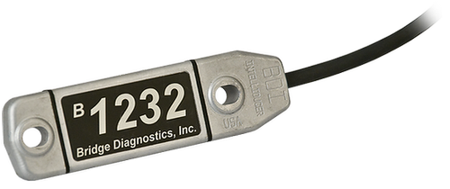
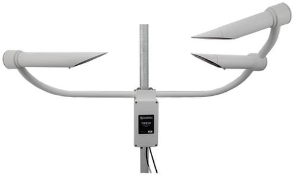

We need a Dam Sensor Reading
Blair Deaver - GeoEngineers
Data Flow - 2016
GeoEngineers

Earth Science and Technology
Trusted advisors to clients who manage natural resources and the built environment.
Our Locations
Team of nearly 350 employees
Local Presence
Earth Science and Technology
Geospatial | Products | Solutions | Visualizations
AGENDA
- Background
- Instrumentation
- Data Rich | Information Poor
- Earth Analytics
- Case Study: PGE
- IoT | Infrastructure | Constraints
BACKGROUND
Over 8,000 Dams Throughout the US
5,000 + dams were built prior to 1970.
Common Causes for Dam Failure
Sub-standard construction
Geologic instability
Poor Maintenance
Internal Erosion - earth dams
Extreme Info
And more ...

Teton Dam, Idaho | 6-5-1976

Taum Sauk, Missouri | 12-14-2005
Inspection and Compliance
Dependent on Use Type
Local | State | Federal
Visual Inspections Are Important
Source: FERC Training Series
Focus on Utilities
US Hydro Dams
Aging Infrastructure
Issuance of licenses for new and existing dam projects
Oversight of all ongoing project operations, including dam safety inspections and environmental monitoring
Inspection Review Cycle
Regular Inspections & Instrumentation Deployment
Data Rich
Safety Survelience Program
Information Poor
High latency between events: data collection | analysis | reporting
Instruments
|
|
 |
 |
|---|---|---|
Piezometer Sensors |
Strain Gauge Sensors |
Weather Monitoring Sensors |
Traditional Data Loggers
More common
Download data via laptop
Autonomous Data Loggers {IoT}

Transmission of data via cell, wifi, satcom
Reduced latency
We need to live with both

Support for both traditional DL and new IoT technology
Earth Analytics
Unearth your data
Key Features
Integrates multiple data streams {Manual and IoT}
FERC compliance Reporting
Geospatial integration
Software as a Service (SaaS)
Demonstration
Case Study
Portland General Electric
Quick Facts
Major Electric Utility for Portland, Oregon Metro area
1,800,000 Customers
19,266,000 Megawatt-hours delivered annualy
Energy Portfolio
5 Operating Dams
Results
Customer for over 1 year
FERC Reporting Time Reduced from over 2.5 months to minutes
ACEC Engineering Excellence Award Winner